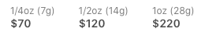
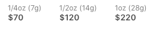

Island Sweet Skunk, sometimes called Sweet Island Skunk, is a sativa strain that users enjoy for its energetic effects. The flavor is most easily described as “sweet skunk,” where tropical fruit flavors take the lead. Often the fruity aroma is likened to grapefruit. Originally bred by Federation Seed Company in Canada, this strain is a descendant of Skunk #1 and grows tall, straight, high-yielding plants. Some varieties of Island Sweet Skunk have a heightened CBD content to help patients treating anxiety, inflammation, and muscle spasms. Flowering occurs at 7 to 8 weeks and buds will have bright yellow-orange hairs. They will remain loose and fluffy, so make sure they don’t get too dried out.
 
